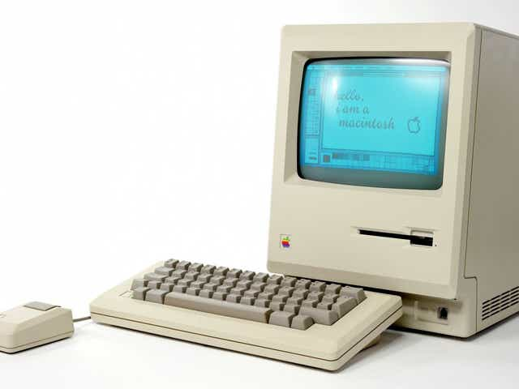
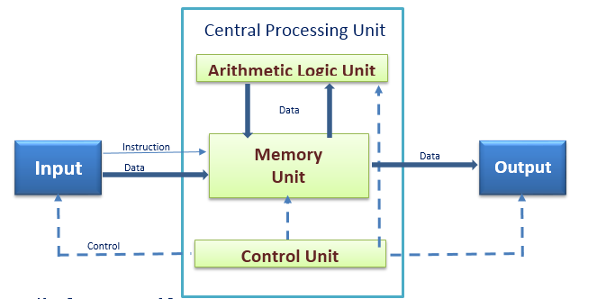

Online Tutorial
Introduction to Computer 
Topic 1
Topics :
Parts of a Typical Computer System

Key C omponents of Computer
- Central Processing Unit ( CPU ) - known as the brain behind every computer system. It performs storage, processing, and control functions.
- Logic Unit (ALU ) - part of CPU that performs mathematical and logical operations.
- Control Unit – part of CPU that serves as the supervisor of the entire computer system. Overall in-charged of coordinating the activities of all the subsystems that comprise the computer system.
- Memory - part of CPU that stores the actual data and instructions. Also called primary memory. Primary memory is a type memory that is directly available to CPU.
-
Types of Primary memory :
- Random Access Memory ( RAM ) - a type of primary memory which is volatile in nature ( less permanent ). It automatically looses its contents when the computer is turned off.
- Read-only Memory ( ROM) - a type of memory that contains predefined programs being used by the computer for its operation. It is more permanent compared to RAM. Users are allowed to access the contents of ROM but are restricted from making any modifications.
- Input devices – devices that transform data, from human-readable form to machine-readable form.
Example: keyboard ( standard output ), mouse, microphone, web cam. Scanner
- Output devices – devices that transform data, from machine-readable form to human-readable form.
Example: monitor ( standard output ), printer, speaker, head phones
Functional Elements of Computer
- Input Section - section of computer where data and instructions are taken in , from the outside world into the computer’s internal memory.
- Process Section - section of computer that Is responsible in performing arithmetic and logical operations.
- Output Section – section of computer where the results of processing are transferred, from the computer’s internal memory back to the outside world.
Different Types of Computer
Computers can be classified based on their size or capabilities, their principles of operation, their purpose , and their age.
- A. Types of Computer Based on Purpose
- Special purpose computers are built for specific application.
Example: ATM machines, Point-of-Sales Terminals, Toll-Fee Collecting Machines
- General purpose computers are used for any type of applications. They can store different programs and do the jobs as per the instructions specified on those programs. Most of the computers that we see today, are general purpose computers.
- B. Types of Computer Based on Principles of Operation
- 1. Analog Computer is a computing device that works on continuous range of values. The results given by the analog computers will only be approximate since they deal with quantities that vary continuously. It generally deals with physical variables such as voltage, pressure, temperature, speed, etc.
- 2. Digital computer operates on digital data such as numbers. It uses binary number system in which there are only two digits 0 and 1. Each one is called a bit. Digital computers are designed using digital circuits in which there are two levels for an input or output signal. These two levels are known as logic 0 and logic 1. Digital Computers can give more accurate and faster results.
Digital computer is well suited for solving complex problems in engineering and technology. Hence digital computers have an increasing use in the field of design, research and data processing.
- 3. Hybrid computer combines the desirable features of analog and digital computers. It is mostly used for automatic operations of complicated physical processes and machines. Now-a-days analog-to-digital and digital-to-analog converters are used for transforming the data into suitable form for either type of computation.
Example: In hospital’s ICU, analog devices might measure the patients temperature, blood pressure and other vital signs. These measurements which are in analog might then be converted into numbers and supplied to digital components in the system. These components are used to monitor the patient’s vital sign and send signals if any abnormal readings are detected. Hybrid computers are mainly used for specialized tasks.
- D. Types of Computer According to Size
Supercomputers
- • Widely used in scientific applications such as aerodynamic design simulation, processing of geological data.
- • Supercomputers are the most powerful computers. They are used for problems requiring complex calculations.
- • Supercomputers are relatively rare.
- • Supercomputers are used by universities, government agencies, and large businesses.
Mainframe Computers:
- • Usually slower, less powerful and less expensive than supercomputers.
- • Mainframes are used by banks and many businesses to update inventory etc.
- • Mainframe computers can support hundreds or thousands of users, handling massive amounts of input, output, and storage./li>
- • Mainframe computers are used in large organizations where many users need access to shared data and programs..
- • Mainframes are also used as e-commerce servers, handling transactions over the Internet.
Minicomputers
- • Smaller than mainframe, a general purpose computers which give computing power without adding the prohibitive expenses associated with larger computer systems.
- • Minicomputers usually have multiple terminals.
- • Minicomputers may be used as network servers and Internet servers.
Microcomputers, or Personal Computers is the smallest, least expensive of all the computers. Micro computers have smallest memory and less power, are physically smaller and permit fewer peripherals to be attached.
Types of Microcomputer:
- • Desktop computers are the most common type of PC.
- • Notebook (laptop) computers are used by people who need the power of a desktop system, but also portability.
- • Handheld PCs (such as PDAs) lack the power of a desktop or notebook PC, but offer features for users who need limited functions and small size.